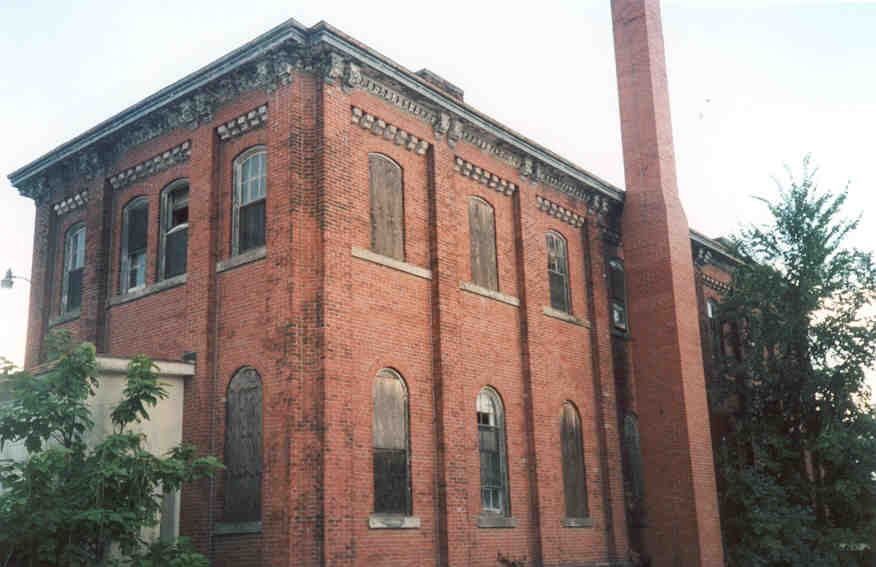
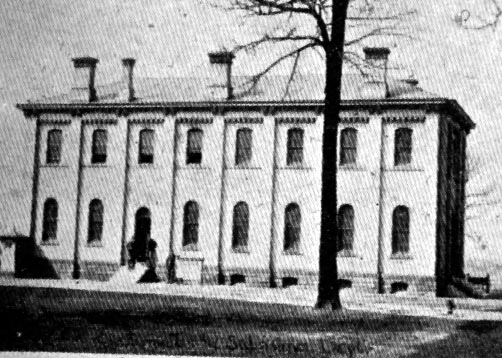

Estimates and Subsistence Department

One of the bureaucracies the military is famous for had its own building at Fort Hayes as early as the late ninteenth century. Today it stands abandoned, surrounded by concrete and a fence. However, careful landscaping and the clever use of chains has made this building extremely difficult to get into. I still plan to get inside, somehow. Below is a picture of the building from 1900.

Back